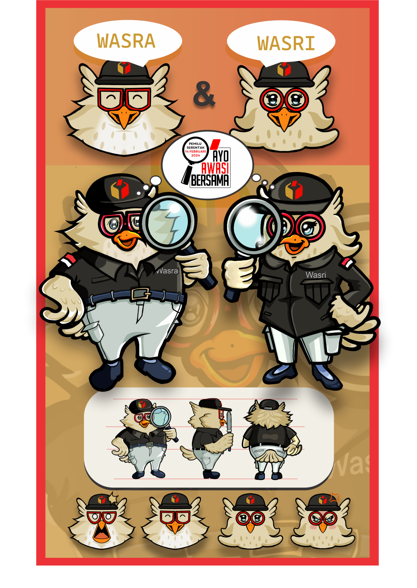

01
Buka layanan
Buka SILANI, pilih Ajukan Informasi, lalu lanjutkan ke halaman PPID Bawaslu.
Panduan langkah demi langkah untuk mengakses layanan informasi publik Bawaslu Kabupaten Bandung.

Ikuti langkah berikut pada portal resmi PPID Bawaslu.
Buka SILANI, pilih Ajukan Informasi, lalu lanjutkan ke halaman PPID Bawaslu.
Jika formulir belum terlihat, geser halaman ke bawah menggunakan petunjuk atau ikon panah pada portal.
Lengkapi email, nama, pekerjaan, pendidikan, nomor telepon/HP, dan alamat sesuai kolom formulir.
Pada bagian Ditujukan Kepada, pilih Bawaslu Kabupaten/Kota, Provinsi Jawa Barat, lalu Kabupaten/Kota Bawaslu Kab. Bandung.
Isi Rincian Informasi dengan informasi yang diminta dan Tujuan Informasi dengan tujuan penggunaan informasi tersebut.
Pilih melihat/membaca/mendengarkan/mencatat atau mendapatkan salinan (hardcopy/softcopy). Jika memilih salinan, pilih cara penerimaan yang tersedia, seperti mengambil langsung, pos, email, kurir, atau WhatsApp.
Unggah salinan identitas diri atau dokumen badan sesuai ketentuan yang diminta pada formulir.
Centang persetujuan pemrosesan data pribadi, selesaikan verifikasi “I'm not a robot”, lalu tekan KIRIM.
Jika persyaratan dinyatakan lengkap, petugas mencatat permohonan dan memberikan tanda terima kepada pemohon.
Berdasarkan panduan layanan yang diberikan, pemberitahuan tertulis disampaikan dalam waktu 10 hari kerja. Periksa pemberitahuan resmi pada portal PPID.
Jika informasi dapat diberikan, pemohon menerima informasi melalui saluran yang dipilih. Jika informasi perlu ditelaah lebih lanjut atau tidak dapat diberikan, pemohon menerima pemberitahuan atau keputusan tertulis dari PPID.
Gunakan menu Cek Status pada SILANI atau portal resmi PPID untuk memantau permohonan.
Gunakan prosedur keberatan apabila tidak puas dengan tanggapan atas permohonan informasi.
Panduan yang diberikan menyebut keberatan diajukan paling lambat 30 hari kerja setelah menerima pemberitahuan tertulis dan/atau keputusan PPID tentang penolakan.
Gunakan menu Ajukan Keberatan pada portal PPID atau saluran lain yang tersedia, seperti surat, faks, telepon, atau datang langsung ke tempat layanan PPID.
Pemohon menerima tanda bukti pengajuan keberatan dari petugas informasi.
Atasan PPID menyampaikan tanggapan tertulis atas keberatan paling lambat 30 hari kerja sejak keberatan diterima.
Gunakan kontak resmi berikut untuk meminta bantuan.
Badan Pengawas Pemilihan Umum Kabupaten Bandung
Jl. Raya Gading Tutuka I No. I, Desa Cingcin, Kecamatan Soreang, Kabupaten Bandung.
WhatsApp/Telepon:
0812-9778-6606
Email PPID:
ppid.bawaslukabbdg@gmail.com
Email umum Bawaslu:
set.bandungkab@bawaslu.go.id
Pengajuan dan proses permohonan tetap berlangsung melalui kanal resmi PPID.